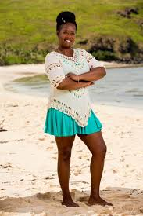
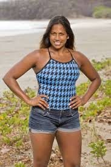
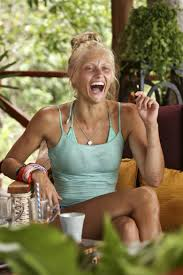
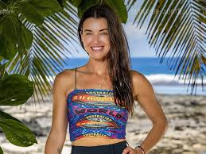

Famous Survivor Contestants
Survivor has featured some of the most strategic, strong, and memorable contestants in reality TV history. Each player brings unique skills, strategies, and memorable moments to the game.
Cirie Fields is widely regarded as one of the greatest players to never win Survivor. Known for her unparalleled social game, Cirie can influence votes and manipulate alliances without ever winning immunity challenges. One of her most legendary moves came in Survivor Micronesia:Fans vs Favorites, when she convinced Erik Reichenbach, who had individual immunity, to give it up. This brilliant maneuver allowed Cirie and her alliance to control the vote and advance their strategy. She’s been called the "Queen of Alliances" for her ability to navigate complex strategies and sway votes. Her clever gameplay and charisma make her a fan favorite across multiple seasons.
Ozzy Lusth is a physical powerhouse and a dominant competitor in challenges. Known especially for his swimming and endurance skills, Ozzy has won numerous reward and immunity challenges. He is also highly strategic, but his focus on challenges sometimes overshadowed his social game, which affected his ability to win the overall title.
Natalie Anderson is recognized for her intelligence, strategic manipulation, and calm under pressure. She excels at puzzles and endurance challenges, while also building strong alliances and navigating tricky vote scenarios. One of her most famous moments came in Survivor: San Juan del Sur, when she subtly ensured her alliance voted the way she wanted by asking, "Did you vote for who I told you to vote for?", a perfect example of her social mastery. Natalie’s ability to balance challenge performance with clever strategy made her a formidable player in her season.
Kelly Wentworth is a fierce and versatile player known for her adaptability and strategic risk-taking. In her gameplay, she made notable moves such as using hidden immunity idols effectively to protect herself or turn the game in her favor. Her idol play, combined with strong social and challenge performance, allowed her to reach deep into the game in multiple seasons.
Parvati Shallow is one of Survivor’s most iconic players, known for her social charm, strategic manipulation, and exceptional challenge endurance. She is famous for building tight alliances and using her hidden immunity idols at the perfect moments to control votes and protect herself and her allies. Her strategic gameplay in Survivor: Micronesia: Fans vs Favorites nearly earned her a second win, as she dominated the social and alliance dynamics while also winning key immunity challenges, including her signature “When It Rains, It Pours” endurance challenge. Parvati’s combination of charm, intelligence, idol play, and daring strategy makes her a consistent fan favorite and one of the most memorable players in Survivor history.
"Every contestant brings a unique story, strategy, and challenge to Survivor."



